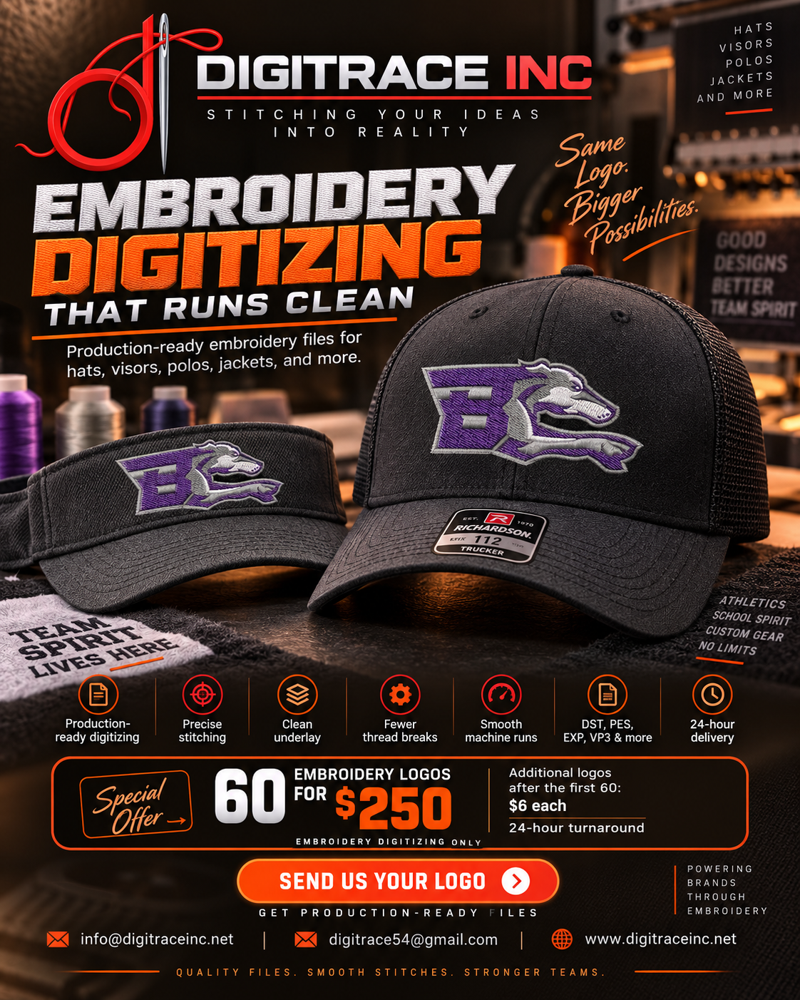
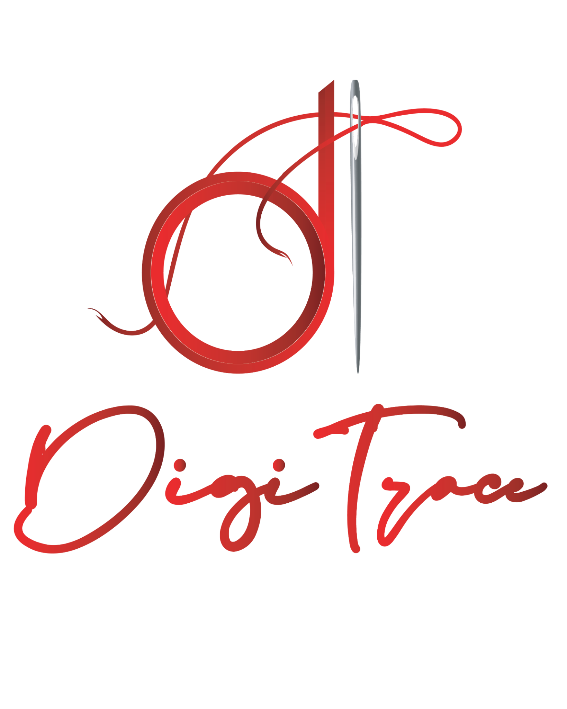
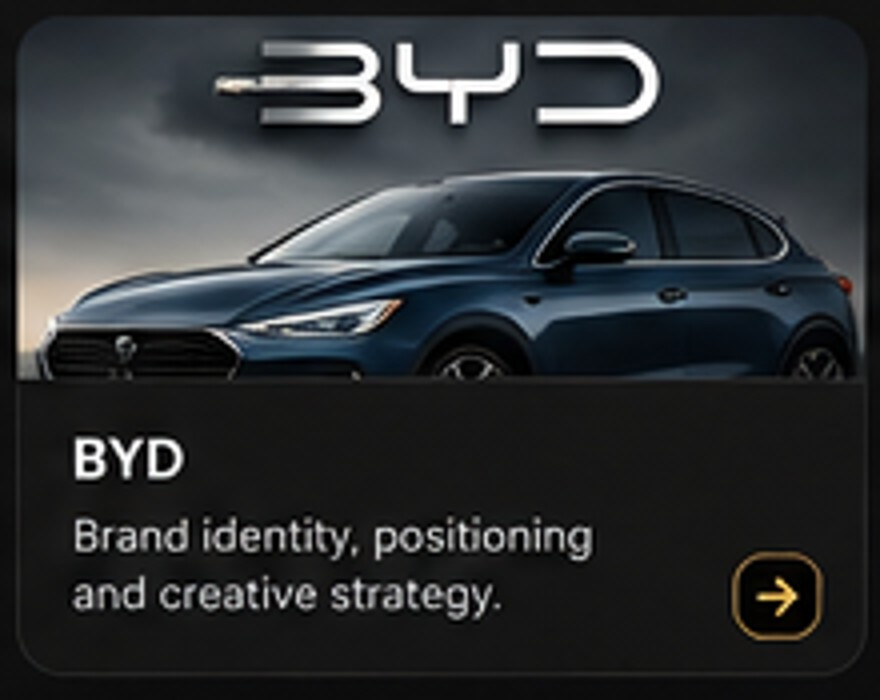
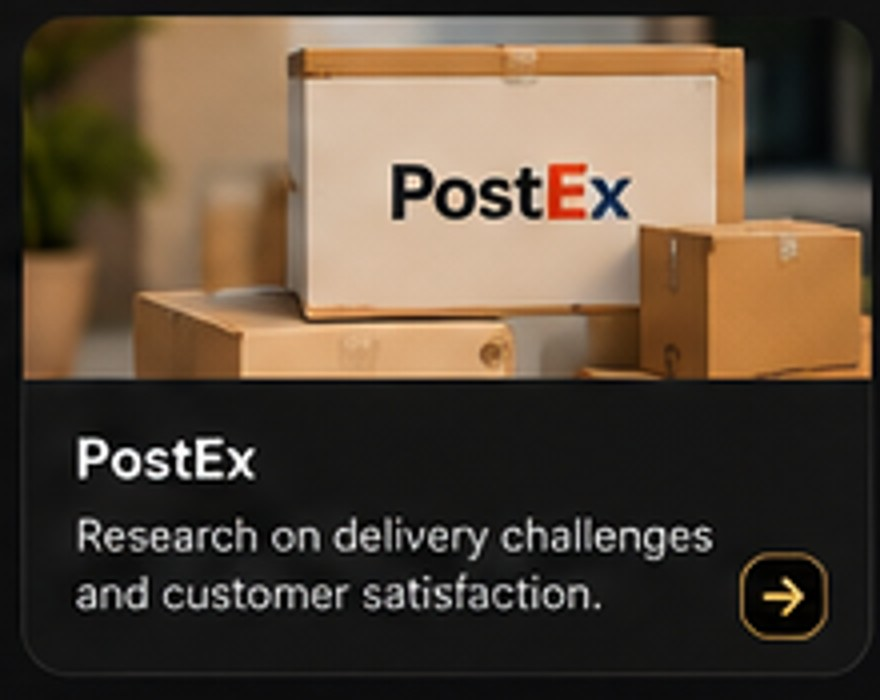

A creative-minded marketer connectingstrategyto move ideas forward.
I'm a Digital Marketing student at Iqra University and a Digital Sales professional at DIGITRACE INC. I work across prospect research, lead generation, brand communication and creative execution — always curious about what makes people connect with brands.
Marketing is more than promotion. It's about understanding people.
I'm pursuing a BS in Digital Marketing at Iqra University while gaining professional experience in digital sales at DIGITRACE INC.
My interests include prospect research, lead generation, customer experience, brand communication, social media and creative problem-solving. I enjoy combining structured thinking with practical execution.
I see every project as an opportunity to learn something new, improve the way I work and create value for the people and businesses I work with.
My academic foundation and professional experience are helping me connect marketing concepts with real business activities.
MARCH 2025 — PRESENT
Digital Sales Professional
DIGITRACE INC.
01
Supporting sales and business development for a creative services business focused on embroidery digitizing and vector artwork.
Areas of responsibility
Researching relevant businesses and potential prospects.
Supporting lead generation and outreach activities.
Managing social media and client communication.
Presenting digitizing and vector artwork services.
Handling sales enquiries and supporting client relationships.
Digital SalesProspectingLead GenerationClient Relations
2024 — 2028
BS Digital Marketing
IQRA UNIVERSITY
02
Developing academic knowledge and practical understanding of digital marketing, business, consumer behaviour and communication.
Areas of learning
Digital marketing and social media strategy.
Consumer behaviour and customer experience.
Brand positioning and market research.
Business management and marketing principles.
Research reports and business presentations.
MarketingResearchStrategyBusiness
03 / CAPABILITIES
A versatile mix of skills and curiosity.
Areas I have explored through work, academic projects and independent learning. These are capability areas, not claims of expert-level mastery.
↗
Digital Marketing
Social media planning, content concepts, brand communication, SEO fundamentals and campaign thinking.
MARKETING◎
Sales & Business Development
Prospecting, client communication, sales conversations, relationship building and business development support.
BUSINESS⌕
Lead Generation
Business research, prospect identification, company qualification and outreach preparation.
GROWTH✳
Creative Communication
Social media graphics, presentation layouts, marketing creatives and visual storytelling.
CREATIVITY⌘
AI & Prompt Engineering
AI-assisted research, prompt writing, content workflows and productivity experimentation.
TECHNOLOGY◇
Research & Analysis
Customer feedback analysis, market research, descriptive insights and business reporting.
ANALYSIS
PRACTICAL TOOL EXPERIENCE
Tools I use to make things happen.
Qualitative levels based on the proficiency descriptions provided in my CV and profile.
CanvaIntermediate
MS OfficeIntermediate
CapCutBeginner
AI ToolsIntermediate
SEOLearning foundation
MY DIGITAL TOOLKIT
Tools I work with
Tools and platforms used across creative, marketing and productivity tasks.
CanvaCapCutMS OfficeMeta Business SuiteClayAI ToolsGoogle ToolsSEO Tools
04 / HOW I CAN CONTRIBUTE
Practical support for growing businesses.
Areas where my current skills and experience can contribute to a team or project.
01
Prospect Research
Identify relevant companies, understand their business and prepare structured prospect lists.
02
Lead Generation Support
Support business development through company research, prospect qualification and outreach preparation.
03
Social Media Support
Assist with content planning, creative direction, captions and consistent brand communication.
04
Marketing Research
Explore customer feedback, competitors and market context to support informed decisions.
05 / MY APPROACH
From a question to a clear next step.
A simple working philosophy I apply to marketing, research and business tasks.
01
Understand
Clarify the business, audience, objective and actual problem.
02
Research
Gather context, explore options and identify relevant opportunities.
03
Execute
Turn the plan into clear communication and practical deliverables.
04
Improve
Review feedback, learn from the process and refine the approach.
06 / SELECTED WORK & LEARNING
Real experience. Academic exploration.
This portfolio separates professional experience from university coursework. DIGITRACE is presented as professional work. SAPPHIRE and BYD are classroom projects only; PostEx is a university research project. None of the academic projects are client engagements or paid work.
Clear project contextProfessional experience: DIGITRACE INC.University work: SAPPHIRE and BYD (classroom projects); PostEx (university research project).

01REAL BUSINESS CREATIVE
PROFESSIONAL EXPERIENCE · DIGITAL SALES & CREATIVE SUPPORT

DIGITRACE INC.
Professional experience supporting a digitizing and vector artwork business. This showcase includes the original brand logo and a promotional design supplied for the portfolio.
FocusDigital sales and business development
ActivitiesProspecting, client communication and marketing support
Educational analysis of online customer experience using customer complaint evidence and descriptive survey findings. Prepared for class only; no work was performed for SAPPHIRE.
FocusOnline customer journey
AnalysisOrder fulfilment and customer support
OutputService improvement recommendations
Customer JourneyResearchInsights

03
UNIVERSITY CLASSROOM PROJECT · NOT CLIENT WORK
BYD Pakistan
Classroom brand research and presentation exploring identity, positioning, brand associations and storytelling. This was an educational exercise, not a project for BYD.
FocusBrand identity and positioning
AnalysisBrand associations and storytelling
OutputBrand strategy presentation
BrandingPositioningStorytelling

04
UNIVERSITY RESEARCH PROJECT · POSTEX
PostEx Courier Services
University research exploring delivery delays, false delivery attempts, rider performance and customer satisfaction. This is academic research, not employment or consulting work for PostEx.
FocusCourier service challenges
AnalysisDelivery operations and customer experience
Project typeUniversity research project
ResearchOperationsCustomer Satisfaction
07 / DEVELOPMENT
Always learning. Always evolving.
My development is an ongoing process of academic learning, practical experience and experimentation.
CONTINUOUS DEVELOPMENT
Building a broader business perspective.
Exploring how marketing, technology, customer behaviour and sales connect in real business environments.
01
Academic learning
Digital marketing, consumer behaviour and business management.
02
Practical experience
Client communication, prospecting and digital sales activities.
03
Independent exploration
AI tools, creative workflows, research and emerging marketing practices.
04
Professional growth
Improving communication, analytical thinking and execution.
08 / PERSONAL PHILOSOPHY
“
A THOUGHT I BRING TO MY WORK
Good marketing starts with understanding.
Before choosing a platform, creating content or starting outreach, understand the audience and the value being offered. Clear thinking makes better execution possible.
THINK CLEARLY. ACT PURPOSEFULLY.
09 / VISUAL SNAPSHOTS
A little more of my world.
A mix of personal photography and illustrative creative visuals that reflect the environments and topics I enjoy exploring.
The supporting visuals are AI-generated illustrative artwork. They are not photographs of actual client meetings, workplaces or project outcomes. The DIGITRACE logo and promotional poster shown in the projects section are supplied real business assets. SAPPHIRE and BYD are classroom-only educational projects; PostEx is university research.
10 / LET'S CONNECT
Have an idea? Let's make a connection.
I'm always interested in connecting with people, learning from new experiences and exploring opportunities in digital marketing, sales and business development.